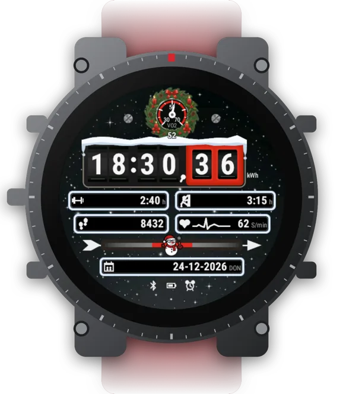
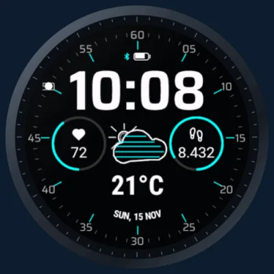
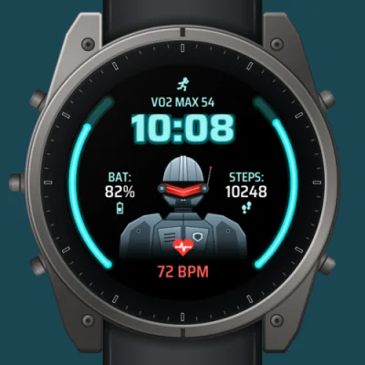

Garmin Watch Face · Freischaltung
GasDefizit XMas
Weihnachten auf dem Zählwerk.
Die Uhrzeit läuft als Rollenzählwerk mit Schneehaube, die Sekunden stehen in roten Kästchen. Darüber zeigt ein Zeiger im Adventskranz deine VO2max, und jeden Morgen fliegt ein neues Weihnachtsbild über das Zifferblatt.
- 25 Weihnachtsszenen
- 5 Datenfelder
- 40 runde AMOLED-Uhren
- Einmal zahlen, alle Einstellungen frei
- Lizenzschlüssel für 2 Aktivierungen
- Die Watch-Face selbst ist gratis
Testmodus: Gib keinen echten Namen, keine echte Adresse und keine echte Karte ein. Testkarte: 4242 4242 4242 4242, 06/32, CVC 123.
Die Zahlung läuft über Dodo Payments im Testmodus. Danach zeigt dir die nächste Seite deinen Lizenzschlüssel. Kopiere ihn dort: Mit einer erfundenen E-Mail-Adresse kommt keine E-Mail an. Es gelten die Nutzungsbedingungen und der Datenschutz.


Ein Schlüssel, alles frei
Installieren kostet nichts. Ohne Schlüssel bekommst du das volle Weihnachtszifferblatt mit den Standardfeldern. Mit Schlüssel stellst du alles selbst ein.


| Funktion | Gesperrt | Frei |
|---|---|---|
| Uhrzeit als Zählwerk mit Sekunden | ||
| VO2max im Adventskranz, Datum, Status-Icons | ||
| Lauf-km, Puls, Schritte, Kalorien | ||
| Jeden Tag um 6:00 eine neue Szene | ||
| 5 Felder aus 8 Datenarten wählen | ||
| Szene nach Tageszeit oder stündlich | ||
| Jedes Element ein- oder ausblenden |
Was drauf ist
Uhrzeit als Zählwerk
24 Stunden auf Walzen mit Schneehaube, die Sekunden in Rot.
VO2max im Adventskranz
Deine Lauf-VO2max als Zeiger mitten im Kranz. Halten öffnet die VO2max-Ansicht der Uhr.
25 Weihnachtsszenen
Santa, Rentiere und Nerd-Icons fliegen nach dem Heben des Handgelenks durchs Band.
Puls mit EKG-Linie
Aktueller Puls, daneben tickt jede Sekunde eine kleine EKG-Linie.
Fünf Datenfelder Mit Schlüssel
Lauf, Rad, Schwimmen, Klettern, Training, Puls, Schritte, Kalorien.
Drei Szenenmodi Mit Schlüssel
Täglich um 6:00, nach Tageszeit oder jede Stunde.
Zeig, was du brauchst Mit Schlüssel
VO2, Szene, Datum, Bluetooth oder Wecker ausblenden.
Gemacht für AMOLED
40 runde AMOLED-Uhren. Mit „Immer an“ zeigt die Uhr nur die Uhrzeit.
25 Weihnachtsbilder
Um 6:00 Uhr kommt das nächste Bild der Reihe, los geht es mit Santa und seinen Rentieren. Mit Schlüssel wechselt die Szene auch nach Tageszeit oder jede Stunde. Tippe auf ein Bild, dann fliegt es oben durchs Band.
- Täglich um 6:00
- Tageszeit Mit Schlüssel
- Stündlich Mit Schlüssel
0 · Santa mit Rentieren
In vier Schritten frei
Kaufen
„Buy now“ antippen und im Testmodus mit einer Testkarte bezahlen.
Schlüssel kopieren
Nach der Zahlung zeigt dir die Seite deinen Lizenzschlüssel. Kopiere ihn sofort, mit erfundener E-Mail-Adresse kommt keine E-Mail an.
In Connect IQ eintragen
Connect-IQ-App › Meine Watch Faces › GasDefizit XMas › Einstellungen › Aktivierungscode
Speichern und synchronisieren
Lass das Handy online und mit der Uhr verbunden, bis die Uhr den Schlüssel geprüft hat. Das kann bis zu 5 Minuten dauern. Danach bleibt sie frei, auch offline.
Fragen
Ist das ein echter Shop?
Nein. Die Seite gehört zu einer Studienarbeit an der Technischen Hochschule Augsburg („Design und Implementierung e-Shop“). Dodo Payments läuft im Testmodus, du bezahlst mit einer Testkarte und es wird nichts abgebucht.
Mit welcher Karte bezahle ich?
Nutze die Testkarte von Dodo Payments: Kartennummer 4242 4242 4242 4242, Ablaufdatum 06/32, CVC 123. Gib keine echte Karte ein. Eine echte Karte lehnt der Testmodus ab („Your card was declined“). Quelle: Dodo-Dokumentation zum Testen.
Welche Daten gebe ich bei der Zahlung ein?
Nur erfundene Daten. Gib keinen echten Namen, keine echte E-Mail-Adresse und keine echte Anschrift ein. Dies ist eine Studienarbeit im Testmodus, kein echter Kauf. Den Lizenzschlüssel zeigt dir die Seite nach der Zahlung. Kopiere ihn dort.
Auf welchen Uhren läuft die Watch-Face?
Auf 40 runden AMOLED-Uhren von Garmin mit Connect IQ 5.2 oder neuer, zum Beispiel Forerunner 165, 265 und 965, Venu 3, vívoactive 5 und 6, fēnix 8 und epix Pro. Uhren mit MIP-Display sind nicht dabei.
Wie viele Uhren kann ich freischalten?
Ein Schlüssel gilt für 2 Aktivierungen. Jede Uhr, die ihn prüft, braucht eine; auch eine Neuinstallation zählt. Danach meldet die Uhr „Geräte-Limit erreicht“.
Ich habe die Watch-Face per USB kopiert. Geht das auch?
Nein. Den Schlüssel trägst du in den Einstellungen der Connect-IQ-App ein, und die gibt es nur, wenn die Watch-Face aus dem Connect IQ Store oder als Beta installiert ist.
Woran sehe ich, ob die Uhr frei ist?
Auf der Uhr im Menü „Anpassen“ der Watch-Face. Der Eintrag „Status“ zeigt „Freigeschaltet“ oder „Gesperrt“, während der Prüfung auch „Prüfung läuft“, „Keine Verbindung“, „Code ungültig“ oder „Geräte-Limit erreicht“.
Ich habe meinen Schlüssel verloren.
Die Seite nach der Zahlung zeigt ihn nur einmal. Mit erfundener E-Mail-Adresse bekommst du keine E-Mail. Im Testmodus kaufst du einfach noch einmal mit der Testkarte. Das kostet nichts.
Unsere Watch Faces
Weitere Watch Faces von CodeBear für runde Garmin-Uhren, kostenlos im Garmin Connect IQ Store.
-
 01 / Watch Face
01 / Watch Face
Vorschau mit Beispieldaten.
GasDefizit
Deine Uhr als analoger Stromzähler: Uhrzeit als Rollenzählwerk, VO2max und frei wählbare Felder für Sport und Alltag.
Kostenlos Auf Garmin Connect IQ -
 02 / Watch Face
02 / Watch Face
Vorschau mit Beispieldaten.
NeonFlow
Große Neon-Ziffern für die Uhrzeit, ein Sekundenring, 8 Farben und 5 Felder nach deiner Wahl, an der Uhr oder in der Connect-IQ-App.
Kostenlos Auf Garmin Connect IQ -

03 / Watch FaceVorschau mit Beispieldaten.
Cyber Future
Futuristisches HUD-Zifferblatt: Sekundenskala mit wanderndem Punkt, große Uhrzeit, großes Wetter und zwei Fortschrittsringe.
Kostenlos Auf Garmin Connect IQ -

04 / Watch FaceVorschau mit Beispieldaten.
Neon Cyborg
Ein Cyborg-Polizist unter leuchtenden Neon-Ziffern, zwei Datenfelder mit Ziel-Linien, Uhrzeit in 24 h und 8 Neon-Farben.
Kostenlos Auf Garmin Connect IQ -
 05 / Watch Face
05 / Watch Face
Vorschau mit Beispieldaten.
Neon Frosh
Kräftige zweifarbige Uhrzeit, sechs frei wählbare Datenfelder, acht Farben, hell oder dunkel.
Kostenlos Auf Garmin Connect IQ
Frohe Weihnachten am Handgelenk
Ein Schlüssel, alle Einstellungen, zwei Aktivierungen.